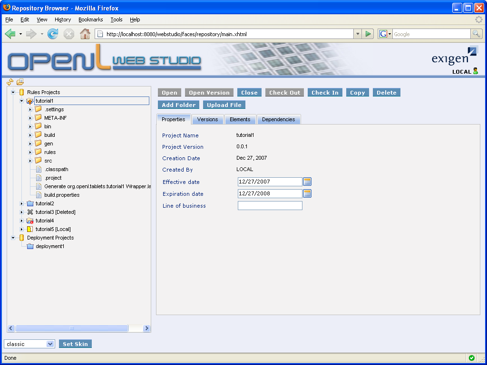

Home News (08/27/07)new Start Here Getting Started Downloads Documentation Tutorials Tablets Structure Deployment Web Studio (08/27/07)new LGPL License Change Log Motivational Reading OpenL Apologia |
|
Home News (08/27/07)new Start Here Getting Started Downloads Documentation Tutorials Tablets Structure Deployment Web Studio (08/27/07)new LGPL License Change Log Motivational Reading OpenL Apologia |
|
Table of Contents
Repository Browser OverviewThe Repository Browser allows users to view projects stored in design time repository (DTR) and to view and edit projects stored in local user workspace. There are two types of projects: rules projects and deployment projects. General repository use cases are the following:
This document demonstrates and briefly explains how to use OpenL Tablets Repository Browser. General ViewRepository Browser General View consists of the two parts: Repository Tree and Project Item View Repository TreeThe Repository Tree provides tree-like view that allows users to browse projects and project elements. Each time you click a tree node only buttons corresponding to available operation are enabled. Project statesProject can be in one of the following states, which is shown by a corresponding icon in the Repository Tree:
Project elements
Project Item ViewProject Item View allows user to execute commands against project and its elements and view information about currently selected element. Element information may contain from 2 to 4 tabs (Properties, Versions, Elements, Dependencies):
|
 Checked out
Checked out Opened
Opened Closed
Closed Deleted
Deleted Local
Local Opened, locked
Opened, locked Closed, locked
Closed, locked Folder
Folder
 File
File